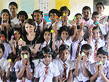
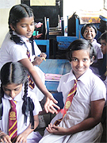
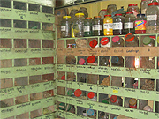
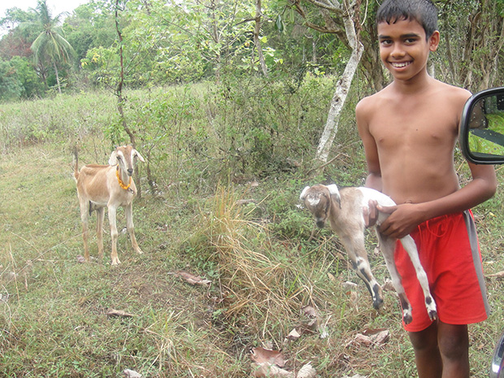

「Two months have passed since I came back from Sri Lanka.
I still have a strong impression of school children with beautiful and pure-hearted eyes when having done volunteer work in Ambepussa Maha Vidyalaya school.
Given a chance to visit the school I taught Japanese and Japanese culture there for just one day.
I chose a Japanese children’s song called “Kaeru-no-uta, Frog song” .
To my surprise they learned it very quickly.
They sang it very well and finally they worked out with singing it by “Rinsyou”.
Then we made “jumping frog” with “Origami” with all together including classroom teachers.
It was amazing!
They got through some difficult processes, then finally all of them created the nice jumping frogs.
It was a passing moment but I was so moved and really glad to see them enjoying it.
When it was about time to say good bye to them, one of the students who was a girl gave me her own drawing and kneeled down with “triple gem/gold bless you”, that was followed by Load Buddha doctrine and very politeness behavior.
Then one after another, they kept coming to me to do the same things.
I couldn't understand what was happening at first.
My host family told me that they gave such an expression when they respected someone and showed gratitude.
I felt as if I were a famous or big person.
I was so touched with the unexpected responses.


I had a lot of interesting experiences on this travel.
Another one is getting to know Ayurveda, specifically herbal medicines.
Ayurveda is one of the complementary/alternative medicines, developed in India and has been practiced for at least 5000 years, which is the oldest originated way.
The term Ayurveda is taken from the Sanskrit words “ayus”, meaning life or life span, and “veda”, meaning knowledge.
The basic principle of Ayurveda is to prevent and treat illnesses by maintaining balance in the body, mind and consciousness through proper drinking, diet, and lifestyle as well as herbal remedies.
In Sri Lanka there is almost the same practice as Indian tradition but they do differ in some aspects, in particularly the herbs used.
As I’m working as a pharmacist at home I’m very interested in the herbs used in Ayurveda.
I asked an English teacher to take me to a local pharmacy which carried a lot of dried herbs and plants for treatment.
Then my first English lesson in this program was a visit a local pharmacy with English teacher.
There were so many drawers containing various kinds of dried plants, seeds and fruits and several kinds of extracted materials like oil or liquid which were in bottles.
A sales assistant who knew very well about the herbs explained earnestly in Sinhala then my teacher translated them in English.
But due to my poor knowledge I didn’t understand each specific property.
All herbs sounded like miracle drugs.
I thought it would be better to study them more at home before coming next time.
The visit the pharmacy inspired me a lot and made me positive to be involved as a healthcare provider, a pharmacist.
During my stay in Sri Lanka I had a chance to visit a village where official assistance and aid were provided to the people.
They grew cassava(manioc), cinnamon, cashew nut, etc in the village.
They lived with nature and sustained abundant gifts from nature.
Their life was quite far from today’s modern life style with advanced technology.
It looked inconvenient and impractical compared to our today’s life.
But they looked happy and always smiled.
We saw a shy boy carrying a new born goat on the way back from the village.
He came up to show it to us with an innocent smile..

I often ask myself and try to answer my own question, “what is happiness?”.
No matter how much fortune we have I think of nothing better than their smiles in the village and the school.
Happiness is a state of mind.
I had the good lesson I’ve almost forgot these days by the travel to Sri Lanka.
Maybe…it is how it used to be in Japan.」